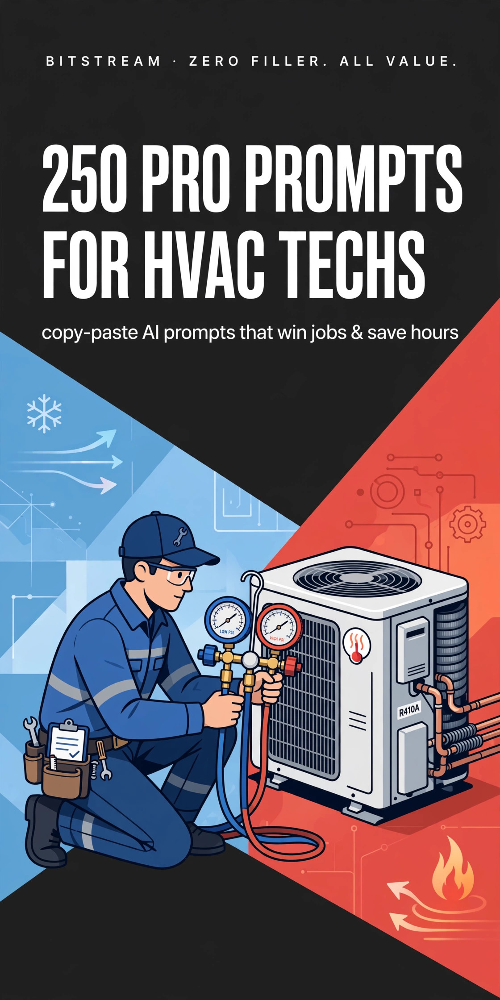

BITSTREAM · ZERO FILLER. ALL VALUE.
250 Pro Prompts
for HVAC Techs
250 copy-paste AI prompts that win jobs & save hours.
Open a free AI tool, paste, fill in the blanks, done.
PRO PACK · $14.99
How to use this pack (60 seconds)
- Open a free AI tool — ChatGPT (chatgpt.com), Claude (claude.ai), or Gemini (gemini.google.com). No account tricks, no paid plan needed.
- Copy any prompt and replace the [BRACKETED] parts with your details — tonnage, SEER2, customer name, prices.
- Be specific. Your equipment, your market, your numbers — specifics in, quality out.
- Treat the first answer as a draft. Reply with "make it shorter," "more professional," or "add my prices" until it's right.
- Talk instead of typing. Every one of these tools has a voice mode — dictate from the truck between calls.
Rule 1 — Describe, don't write. You don't need to write well. You just need to describe what you want in plain words. The AI does the writing.
Rule 2 — AI is a checklist, not a license. Diagnostic and technical prompts are sounding boards only. Always verify against the manufacturer specs, your local code, and your EPA 608 practices. Your judgment is the final word — never the AI's.
Rule 3 — One win at a time. Don't try to AI your whole business today. Pick one prompt. The quote that needs writing, the review that needs answering, the tech that needs training.
1 · Estimates & Quoting Installs/Replacements
Build winning quotes fast: line-item estimates, good/better/best option sheets, repair-vs-replace math, and follow-ups that turn unsold quotes into signed jobs.
PROMPT 001
Full Changeout Quote Builder
Act as an HVAC office manager. Build a complete line-item quote for a full system changeout: [3-ton] [gas furnace + AC], [15.2 SEER2], home is [1,800 sq ft, single story]. Include equipment cost, labor hours at [$125/hr], new line set, pad, thermostat, permits, haul-away of old unit, and a 1-year labor warranty. Show each line with a dollar amount and a grand total. Keep language plain so a homeowner understands every line.
PROMPT 002
Good / Better / Best Option Sheet
Act as an HVAC sales coach. Build a good/better/best option sheet for a [3-ton] AC + furnace changeout at [123 Main St]. Good: [14.3 SEER2 single-stage, 10-year parts]. Better: [15.2 SEER2 two-stage, 10-year parts + 5-year labor]. Best: [17 SEER2 variable-speed, 12-year parts + 10-year labor]. For each option show price, estimated monthly energy savings vs their old [10 SEER] unit, and one sentence on who it's for. End with a one-line recommendation for a homeowner who plans to stay [10+ years].
PROMPT 003
Repair vs Replace Cost Comparison
Act as an HVAC advisor. The customer's [12-year-old] [R-22] system needs a [compressor replacement] quoted at [$2,400]. A new [15.2 SEER2] system is [$9,800]. Write a one-page comparison I can hand the homeowner: repair cost, likely repairs in the next 3 years on a system this old, energy savings of the new system at [$0.14/kWh], refrigerant availability risk for R-22, and a break-even estimate. Neutral tone — let the numbers sell.
PROMPT 004
Explain SEER2 in Plain English
Write a short plain-English explanation of SEER2 I can read to a homeowner in under 60 seconds. Explain what the number means, why a [15.2 SEER2] unit costs less to run than their old [10 SEER] unit, and roughly how much they'd save per summer at [$0.14/kWh] in [Florida]. No jargon, no condescension — talk like a neighbor.
PROMPT 005
Explain HSPF2 for Heat Pumps
Write a 60-second plain-English script explaining HSPF2 to a homeowner considering a heat pump. Cover what it measures, why [8.1 HSPF2] beats [7.0 HSPF2] on winter heating bills, and when a heat pump makes sense vs straight electric heat in [a mild-winter climate]. End with one question I can ask to check they understood.
PROMPT 006
Financing Pitch Script
Write a natural 45-second script I can use in the home to introduce financing for a [$11,500] system. We offer [12 months same-as-cash] and [60 months at 9.99% APR]. Show the monthly payment for each. The script should normalize financing ("most of our customers finance"), avoid pressure, and end with an assumptive close question.
PROMPT 007
Financing Options One-Pager
Act as an HVAC office manager. Write a one-page handout titled "Ways to Pay for Your New System" for a [$10,200] quote. Include: pay in full (with [3%] discount), [12-month same-as-cash], [60-month financing at $X/mo], and [utility rebate of $400]. Show exact monthly payments. Plain language, no fine print tricks — just honest options.
PROMPT 008
Unsold Quote Follow-Up Text (Day 3)
Write a friendly follow-up text to send 3 days after an unsold [$9,800] changeout quote to [customer name]. Keep it under 40 words, mention I'm holding their pricing until [Friday], offer to answer one question, and include a soft call to action. No desperation, no discount offered yet.
PROMPT 009
Unsold Quote Follow-Up Call Script (Day 10)
Write a 60-second phone script for following up on a [10-day-old] unsold quote for [customer name]. Open warm, ask if they've had other quotes, handle the "still thinking about it" stall with one good question, and offer to re-walk the good/better/best options in 5 minutes. Include what to say if they went with a competitor — leave the door open gracefully.
PROMPT 010
Price Objection Handler
Act as an HVAC sales coach. Give me 5 calm, honest responses to "your price is too high" after quoting [$11,000] for a full changeout. Each response under 3 sentences. Cover: comparing apples to apples, cost-per-year over a [15-year] lifespan, energy savings math, warranty value, and the cost of waiting. No bashing competitors.
PROMPT 011
Ductwork Add-On Quote
Act as an HVAC estimator. Build a line-item add-on quote for replacing ductwork during a changeout: [1,800 sq ft] home, [12 supply runs], [R-8 flex], new plenum, mastic-sealed, [2 returns added]. Show materials, labor hours at [$125/hr], and total. Add one paragraph explaining to the homeowner why new ducts with a new system protect their investment.
PROMPT 012
Mini-Split Multi-Zone Quote
Act as an HVAC estimator. Build a quote for a [4-zone] mini-split install: [36k BTU] outdoor unit, heads of [9k + 9k + 12k + 12k], [20 SEER2], line sets through [an attic], electrical whip and disconnect, condensate drains. Line-item equipment, labor, electrical subcontractor, and permits. Include a one-paragraph plain-English note on why mini-splits fit this [older home with no ductwork].
PROMPT 013
Heat Pump vs Gas Furnace Comparison
Act as an HVAC advisor. Write a side-by-side comparison for a homeowner choosing between a [heat pump] and a [gas furnace + AC] for their [2,000 sq ft] home in [North Carolina]. Compare installed cost, winter operating cost at [$0.13/kWh] vs [$1.40/therm] gas, equipment lifespan, and comfort differences. End with a recommendation based on their [mild winters, existing gas line].
PROMPT 014
Load Calculation Summary for Homeowner
I ran a Manual J and the home needs [2.5 tons] of cooling. Write a half-page plain-English summary I can leave with the homeowner explaining why we're quoting [2.5 tons] instead of the [3.5-ton] unit a competitor quoted. Explain short-cycling, humidity problems, and higher bills from oversizing — without badmouthing the competitor. Make me sound like the careful pro.
PROMPT 015
Quote Expiration Reminder
Write a short professional email reminding [customer name] their [$10,400] quote expires on [October 20]. Mention that equipment pricing from our distributor changes [monthly] and we can't guarantee the price after that date. Under 100 words, warm tone, clear call to action to call or reply.
PROMPT 016
Second-Opinion Visit Script
Write a script for a second-opinion visit where another company quoted [$14,000] for a full system. I'm there to give an honest assessment of their [14-year-old] system. Include: what to inspect, how to present findings without trash-talking, how to quote fairly at [$10,500], and one line that wins trust when our price is lower.
PROMPT 017
Commercial Rooftop Unit Quote
Act as a commercial HVAC estimator. Build a line-item quote for replacing a [7.5-ton] rooftop package unit at [a small restaurant]: unit cost, crane rental, curb adapter, economizer, disconnect and electrical, permits, startup and commissioning. Include a note on scheduling the crane lift for [early Sunday morning] to avoid disrupting business. Professional tone for a business owner.
PROMPT 018
Rebate & Tax Credit Finder Summary
Act as an HVAC office researcher. For a [16 SEER2 / 9.5 HSPF2] heat pump install in [Florida] in [2026], list the federal tax credits, utility rebates, and manufacturer promos the homeowner may qualify for. Show each incentive name, amount, and what paperwork the homeowner needs. Add a disclaimer to verify with their tax pro. Plain language.
PROMPT 019
Deposit Request Email
Write a professional email requesting a [50%] deposit of [$5,100] to order equipment for [customer name]'s [October 15] install. Explain the deposit covers custom-ordered equipment, give [3] payment methods (check, card, bank transfer), and state the install date gets locked once the deposit clears. Under 120 words.
PROMPT 020
Change Order Form Wording
Act as an HVAC office manager. Write standard change-order wording for when a job needs extra work mid-install — e.g., discovered [rotted condensate line in the wall] adding [$380]. Include: description of additional work, added cost, statement that work pauses until signed, and signature lines for tech and homeowner. Protect the company, stay fair.
PROMPT 021
Explaining Why the Cheapest Bid Is Risky
Write a tactful one-paragraph script for when a homeowner shows me a competitor's quote that's [$3,000] cheaper. Cover permit skipping, no load calculation, undersized line sets, and warranty registration gaps — as questions the homeowner should ask the other bidder, not accusations. Make me the trusted advisor.
PROMPT 022
New Construction HVAC Bid
Act as an HVAC estimator. Build a bid template for a new-construction [2,400 sq ft two-story] home for builder [ABC Homes]: two [2-ton] systems, full duct design per Manual D, bath fan and dryer venting, thermostat rough-ins, startup and balancing. Line-item rough-in vs trim phases, payment schedule tied to [builder milestones], and a clause on who's responsible if drywall covers access.
PROMPT 023
Landlord / Rental Property Quote
Write a quote email for a landlord who needs the cheapest reliable option for a [rental property]: [2-ton] condenser-only replacement, [14.3 SEER2], reusing the existing air handler. Line-item the cost, note the [5-year parts] warranty, and add one upsell paragraph on a maintenance plan that keeps tenants from calling them at midnight. Landlord-to-landlord tone.
PROMPT 024
Quote Lost — Competitor Follow-Up
Write a gracious text to [customer name] who chose another company for their [system replacement]. Thank them, offer free filter reminders anyway, and ask for the chance to quote their next project or service the new system. Under 50 words. The goal: stay the backup they'll call when the cheap install has problems.
PROMPT 025
Annual Quote Audit Checklist
Act as an HVAC business coach. Give me a 15-point checklist to audit my last [20] unsold quotes. Include: response time, number of follow-ups, good/better/best offered, financing mentioned, price vs competitor, tech vs salesperson who quoted, and seasonal timing. For each point, one sentence on what a healthy close rate looks like. I want to find where I'm leaking jobs.
2 · Seasonal Tune-Up Campaigns & Maintenance Agreements
Fill your slow seasons with tune-up blitzes and turn one-time customers into recurring maintenance plan members.
PROMPT 026
Spring Tune-Up Email Blast
Write a spring AC tune-up email for my customer list of [800] homeowners. Subject line under 50 characters. Offer: [$89] 21-point tune-up, normally [$129], book by [April 30]. Include why spring beats waiting for the first heat wave, one testimonial placeholder, and a clear book-now button line. Warm, neighborly tone.
PROMPT 027
Fall Furnace Check Text Campaign
Write a fall furnace safety-check text under 160 characters for [past customers]. Offer [$99] furnace tune-up, mention carbon monoxide safety, and include a reply keyword [HEAT] to book. Then give me 2 alternate versions: one urgent, one friendly.
PROMPT 028
Maintenance Plan Tier Builder
Act as an HVAC business coach. Design 3 maintenance plan tiers for my company: Basic [$149/yr] (1 visit), Plus [$249/yr] (2 visits), Premium [$349/yr] (2 visits + priority service + 15% repair discount). For each tier list exactly what's included, the discount perks, and who it's best for. Add a one-line pitch for each tier my techs can say in the home.
PROMPT 029
Maintenance Plan Pricing Calculator
Act as an HVAC business coach. I charge [$125/hr] and a tune-up takes [1.25 hours] plus [$15] in parts. Help me price a 2-visit annual plan so I keep at least a [35%] margin after the [15%] repair discount members get. Show the math, then suggest the final retail price and the member's effective savings vs two à la carte tune-ups.
PROMPT 030
In-Home Maintenance Plan Pitch
Write a natural 60-second pitch my tech can give after finishing a [$129] tune-up, offering the [$249/yr] Plus plan. Cover: what they just got, what the plan adds (fall visit, priority scheduling, [15%] repair discount), the math showing it pays for itself, and an assumptive close. Conversational, zero pressure.
PROMPT 031
Plan Renewal Reminder Email
Write a renewal email for maintenance plan members whose [12-month] plan expires [November 1]. Remind them of the [2] visits they used, the [$X] they saved on repairs this year, and that renewing before [October 15] locks last year's price of [$249]. Under 150 words, appreciative tone.
PROMPT 032
Expired Plan Win-Back Text
Write a win-back text for customers whose maintenance plan lapsed [6+ months] ago. Offer a [$99] tune-up (normally [$129]) as a "welcome back" and mention their system hasn't been checked since [last visit date]. Under 160 characters, friendly, no guilt trip.
PROMPT 033
21-Point Tune-Up Checklist
Act as a senior HVAC tech. Write a 21-point residential AC tune-up checklist my techs can follow and I can hand to the customer as proof of work. Cover electrical, refrigerant, airflow, condensate, thermostat, and safety items. For each point, one short line. Add a "notes / recommendations" section at the bottom for upsells found during the visit.
PROMPT 034
Furnace Tune-Up Checklist
Act as a senior HVAC tech. Write an 18-point gas furnace tune-up and safety checklist: heat exchanger inspection, CO test, burners, ignition, flue, gas pressure, blower, filter, thermostat. Mark the [safety-critical] items with a ★. One line each, plus a customer-facing summary paragraph explaining what was checked and why it keeps their family safe.
PROMPT 035
Tune-Up Upsell Script (No Pressure)
Write a tech script for presenting findings during a tune-up: the [capacitor] is weak ([$185] repair) and the [condensate drain] is starting to clog ([$95] flush). Teach the tech to show the customer, explain the risk of waiting, give the member-discount price, and accept "not today" gracefully while documenting the recommendation. Honest, educational tone.
PROMPT 036
Slow-Season Promo Calendar
Act as an HVAC marketing coach. Build a 12-month promo calendar for my [2-tech] shop in [Florida]. For each month: one campaign theme (tune-ups, maintenance plans, IAQ, etc.), the offer, and the channel (email, text, door hanger, Facebook). Focus on filling [March] and [October] slow periods. One line per month.
PROMPT 037
Door Hanger Copy for Tune-Ups
Write door hanger copy for a [$89] spring AC tune-up special in [zip code 34982]. Front: headline under 8 words, 3 bullet benefits, big price, phone number placeholder. Back: 4 signs your AC needs attention before summer, plus a "mention this hanger" bonus of a [free filter]. Punchy, local, readable from the porch.
PROMPT 038
Facebook Post for Tune-Up Special
Write a Facebook post for my HVAC company's [$89] spring tune-up special. Hook in the first line, 3 emojis max, mention [same-week appointments], tag the service area [Fort Pierce & Port St. Lucie], and end with a comment prompt ("Drop a 🌡️ if your AC ran all last summer"). Under 120 words.
PROMPT 039
Maintenance Agreement Contract Terms
Act as an HVAC business advisor. Draft plain-language maintenance agreement terms covering: [2] visits per year, what's included/excluded, [15%] repair discount, priority scheduling definition, [30-day] cancellation policy, auto-renewal terms, and that the plan is tied to the [equipment, not the homeowner] if they sell. Fair to both sides, no legalese — and add a note to have a local attorney review before use.
PROMPT 040
Filter Reminder Program
Write a 3-message filter reminder sequence (text messages) I can send customers every [90 days]: message 1 is a helpful reminder with their filter size [20x25x1], message 2 offers filter delivery for [$X], message 3 ties dirty filters to higher bills and breakdowns. Each under 160 characters. Friendly, useful, not spammy.
PROMPT 041
Pre-Season System Health Report
Act as an HVAC tech. Write a one-page "System Health Report" template my techs fill out after each tune-up: system age, refrigerant type, overall grade [A–F], 5 key readings (superheat, subcooling, static pressure, temp split, amps), 3 recommendations ranked by urgency, and estimated remaining life. Customer-facing language that builds trust and plants seeds for future work.
PROMPT 042
Landlord Maintenance Plan Pitch
Write a pitch email for landlords with [5+] rental units: a per-unit maintenance plan at [$199/unit/yr] covering 2 visits, priority no-cool response within [24 hours], and [10%] repair discount. Lead with the money math: fewer emergency calls, longer equipment life, happier tenants. End with an offer for a free walkthrough of their [worst-performing] property.
PROMPT 043
Church / Small Business Plan Offer
Write a proposal letter for a [church] with [3] rooftop units: quarterly maintenance at [$175/unit/visit], filter changes included, priority scheduling, and a yearly budget forecast so their board can plan. Respectful tone, emphasize reliability for [Sunday services] and stewardship of their building. One page.
PROMPT 044
Tune-Up Day Blitz Plan
Act as an HVAC operations coach. Plan a one-day "Tune-Up Blitz" for my [3-tech] shop: goal of [24] tune-ups in one [Saturday] in a single [neighborhood]. Include routing logic, a [$79] blitz price, how many office staff needed, the tech script for offering maintenance plans on every call, and a follow-up plan for the [leads] generated. Make it a money-making machine.
PROMPT 045
Post-Tune-Up Thank-You Email
Write a post-tune-up thank-you email that goes out the same evening. Thank [customer name], summarize what tech [name] checked in 2 lines, remind them their next visit is due [fall], and include a one-click Google review link placeholder. Under 120 words. Warm and professional.
PROMPT 046
IAQ Add-On Pitch (Filters, UV, Purifiers)
Write a tech script for offering indoor air quality add-ons during a tune-up: [media filter upgrade $295], [UV light $450], [whole-home purifier $850]. For each, one sentence on what problem it solves (allergies, odors, germs), who it's best for, and a soft trial close. Educational, never fear-based.
PROMPT 047
Maintenance Plan vs Pay-As-You-Go Comparison
Build a side-by-side comparison table (as text I can print) of my [$249/yr] Plus plan vs pay-as-you-go: 2 tune-ups at [$129] each, average [1] repair per year at [$350], priority scheduling value, and total annual cost each way. Show the plan saving the customer [$X] per year. Plain numbers, no hype.
PROMPT 048
New Homeowner Welcome Packet
Write a welcome letter for new homeowners in [my service area] introducing my company: who we are, a [$89] "new home HVAC inspection" offer, why knowing your system's age and refrigerant type matters, and a fridge-magnet-worthy emergency number line. Friendly neighbor tone, one page.
PROMPT 049
Referral Ask During Tune-Up
Write a 30-second script my tech can use at the end of a tune-up to ask for referrals. Include: the right moment (after good news about their system), exact words that don't feel awkward, mention of our [$50] referral credit, and what to do if they say yes (text them a shareable link on the spot). Natural and confident.
PROMPT 050
Annual Plan Member Appreciation Note
Write a short appreciation note (email or card) for maintenance plan members at the [holidays]. Thank them for trusting us with their comfort, remind them of priority scheduling through [winter], and include a [$25] gift card toward any service as a thank-you. Under 100 words, genuine warmth.
3 · Winning More Jobs — Reviews, Referrals & Follow-Up
Turn happy customers into a review and referral engine that keeps your schedule full without ad spend.
PROMPT 051
Google Review Request Text
Write a Google review request text to send [2 hours] after a completed [AC repair] for [customer name]. Thank them, mention tech [name] by name, include a review link placeholder, and keep it under 160 characters. Warm, personal, easy to say yes to.
PROMPT 052
Review Request for Install Jobs
Write a review request email for a [full system install] completed [yesterday] for [customer name]. Reference the [new 15.2 SEER2 system], ask them to mention [comfort and the install crew] in the review, include placeholders for Google and Facebook links, and offer [$25] off their first tune-up as thanks. Under 120 words.
PROMPT 053
Responding to a 5-Star Review
Write 3 different short responses to 5-star Google reviews I can rotate: one mentioning the tech by name [tech name], one mentioning the specific service [furnace install], and one inviting them to join our [maintenance plan]. Each under 40 words, genuine, with my company name [company name] signed at the end.
PROMPT 054
Responding to a Bad Review (Calm & Professional)
A customer left a 2-star review saying [the tech was late and the price was higher than quoted]. Write a public response under 80 words: acknowledge, apologize without admitting fault on specifics, invite them to call me directly at [phone], and show future customers we take feedback seriously. No defensiveness, no excuses.
PROMPT 055
Responding to an Unfair Review
A reviewer claims [we never showed up] but they aren't in our customer records. Write a polite public response that calmly states we have no record of their visit, invites them to contact us with details so we can investigate, and reassures readers. Professional, not accusatory — future customers are the real audience.
PROMPT 056
Referral Program One-Pager
Act as an HVAC marketing coach. Write a one-page referral program handout: give [$50] credit for every referred customer who books, the referrer gets [$50] too, no limit, paid as account credit or [gift card]. Include 3 lines on how to refer (text us the name, share our link, mention at their appointment). Simple enough to explain in 30 seconds.
PROMPT 057
Referral Ask Text After Great Service
Write a text to [customer name] the day after we fixed their [AC on a 95-degree day]: thank them, mention our [$50] referral credit, and ask if they know a neighbor whose AC is struggling. Under 160 characters, grateful tone, zero pressure.
PROMPT 058
Neighbor Referral Door Hanger
Write door hanger copy to leave with neighbors after an install at [address]: "We just installed a new system at your neighbor's home" headline, 3 reasons neighbors call us (same-day service, upfront pricing, [4.9-star] rating), and a [$50] new-customer discount mentioning [street name]. Friendly, local, not salesy.
PROMPT 059
Win-Back Text for Old Customers
Write a win-back text for customers we haven't seen in [18+ months]. Mention it's been a while since [tech name] serviced their system, offer a [$99] tune-up (normally [$129]), and ask if their system has been running okay. Under 160 characters. Warm, like checking in on a neighbor.
PROMPT 060
Win-Back Email Sequence (3 Emails)
Write a 3-email win-back sequence for customers inactive [2+ years]: email 1 is a friendly check-in ("is your system ready for summer?"), email 2 offers a [$89] tune-up special, email 3 is a last-chance "we'll stop bothering you" note with a [maintenance plan] offer. Each under 120 words, spaced [7 days] apart.
PROMPT 061
Thank-You Note After Install
Write a handwritten-style thank-you note to include with the final paperwork after a [$10,500] install for [customer name]. Thank them for trusting us, remind them to register the warranty at [manufacturer URL], give the office number for any question "even at 2am," and mention the [$50] referral credit. Under 100 words, sincere.
PROMPT 062
Thank-You Text After Emergency Call
Write a thank-you text to send the morning after an [after-hours emergency repair] for [customer name]. Hope they slept comfortably, remind them the repair is warrantied for [1 year], and invite them to save our number. Under 160 characters, caring tone.
PROMPT 063
Review Response Template Pack
Act as an HVAC marketing coach. Give me 10 short Google review response templates I can copy-paste: 5-star, 5-star mentioning price, 5-star mentioning speed, 4-star, 3-star vague complaint, complaint about price, complaint about scheduling, complaint about a tech, fake review, and competitor's shill review. Each under 50 words with a [bracket] for personalization.
PROMPT 064
Asking for Reviews In Person
Write a 30-second script my tech can say while packing up after a job that went well: the exact words to ask [customer name] for a Google review, when to hand them the [QR code card], and what to say if they seem hesitant. Include a fallback: "a review on Facebook works great too." Natural, not beggy.
PROMPT 065
Realtor Partnership Outreach
Write an outreach email to [realtor name] at [brokerage] proposing a partnership: priority HVAC inspections for their listings within [48 hours], pre-listing system checkups at [$99], and a [$50] referral credit per closed referral. Mention we serve [their farm area] and carry [proper licensing]. Professional, one page, clear what's in it for them.
PROMPT 066
Property Manager Partnership Pitch
Write a pitch email to a property manager overseeing [40] units: priority service, flat-rate diagnostic of [$89], volume maintenance pricing at [$179/unit/yr], and digital invoices with unit numbers for their books. Lead with the pain we solve: [tenant no-cool calls at midnight]. End with an offer to service their [worst] unit free as a trial.
PROMPT 067
Customer Birthday / Holiday Text
Write a short holiday text for my customer list: warm wishes from [company name], a [$25] service credit good through [January] as a thank-you, and our emergency number. Under 160 characters. Genuine, not a sales blast.
PROMPT 068
Facebook Review Contest
Write a Facebook post announcing a review contest: every Google review in [October] enters a drawing for a [free year of maintenance plan, $249 value]. Include the rules (one entry per customer, winner drawn [Nov 1]), a review link placeholder, and a line that past reviewers are already entered. Fun tone, under 120 words.
PROMPT 069
Nextdoor Introduction Post
Write a Nextdoor intro post for my HVAC company in [neighborhood]: who I am, how long I've served [the area], my [license number], a [$50] neighbor discount on first service, and an invitation to ask HVAC questions anytime. Neighbor-first tone, no hard sell — Nextdoor hates ads.
PROMPT 070
Following Up After a Free Estimate
Write a 3-touch follow-up sequence after a free repair estimate of [$650] the customer didn't book: touch 1 (next day text) recaps the finding, touch 2 (day 4 call script) asks what questions remain, touch 3 (day 10 email) offers to honor the price until [date]. Each under 60 words except the call script. Persistent but respectful.
PROMPT 071
New Mover Welcome Offer
Write a postcard-style message for new movers in [zip code]: welcome to the neighborhood from [company name], a free [HVAC system age & health check, $129 value] for new homeowners, and why knowing your system's condition in the first [30 days] matters. Friendly, useful, one side of a postcard.
PROMPT 072
Turning a Complaint Into a Review
A customer was upset about [a 3-hour arrival window] but we made it right with [a discount]. Write a follow-up text [2 days] later: check they're happy now, gently ask if they'd share their experience (including how we fixed it) in a Google review, link placeholder. Under 160 characters. Humble, hopeful.
PROMPT 073
Annual Customer Appreciation Event Invite
Write an invitation for a customer appreciation cookout at [our shop, date]: free food, [kids' activities], a raffle for a [free tune-up], and a "bring a neighbor" [$50] credit for both. Under 150 words, warm community tone. Goal: referrals and goodwill, not sales pitches.
PROMPT 074
Video Testimonial Request Script
Write a script for asking a happy install customer to record a 30-second video testimonial on my tech's phone: exact words to ask, 3 prompts to guide them ("what was wrong," "how did we do," "would you recommend us"), and what to say if they're camera-shy (a written quote works too). Include a one-line video release consent they can say on camera.
PROMPT 075
Review & Referral Monthly Scorecard
Act as an HVAC business coach. Build a monthly scorecard template for reviews and referrals: new Google reviews, average rating, review response rate, referrals received, referrals converted, revenue from referrals, and tech leaderboard. For each metric, one line on what "good" looks like for a [3-tech] shop. I want one page I can review on the 1st of every month.
4 · Scheduling & Dispatch During Heat Waves
Keep your cool when the phones explode: triage scripts, dispatch priorities, overtime plans, and honest wait-time communication.
PROMPT 076
No-Cool Call Triage Script
Write a phone triage script for my dispatcher handling no-cool calls during a [100-degree] heat wave. Include: 5 quick questions to diagnose over the phone (thermostat, breaker, filter, age of system, any ice), 3 safe DIY checks to walk them through, red flags that mean same-day priority ([elderly, infants, medical equipment]), and exact words for booking [2 days] out when we're slammed. Calm, caring, efficient.
PROMPT 077
Dispatch Priority Rules
Act as an HVAC operations coach. Write dispatch priority rules for a [4-tech] shop during extreme heat: rank these call types — no-cool with [elderly/infants], no-cool standard, maintenance plan members, partial cooling, commercial refrigeration-adjacent, tune-ups. For each, define the target response time and when a lower-priority call gets bumped. One page, clear enough to post on the dispatch board.
PROMPT 078
Dispatch Board Organization System
Act as an HVAC operations coach. Design a dispatch board system (whiteboard or app) for [5] techs: color codes for [emergency / today / scheduled / waiting on parts], what info goes on each job card, how the dispatcher re-routes when a job runs long, and an end-of-day board reset routine. Include a morning huddle agenda under 10 minutes.
PROMPT 079
Overtime Scheduling Plan
Act as an HVAC business coach. Build a heat-wave overtime plan for [4] techs: max hours per day before fatigue hurts quality ([12]), a rotation so no one works more than [6] straight days, overtime pay math at [1.5x on $35/hr], and a Saturday triage-only schedule. Include one paragraph on spotting burnout and what to say to a tech who needs a break.
PROMPT 080
Communicating Wait Times Honestly
Write 3 scripts for telling customers about wait times during a heat wave: (1) booking [3 days] out for non-emergency, (2) telling a same-day caller we can't reach them today, (3) updating a customer whose tech is running [2 hours] late. Each under 60 words. Honest, empathetic, with one thing we CAN do for them in each case.
PROMPT 081
After-Hours Policy Text
Write an after-hours auto-reply text for when customers call at [11pm]: our hours [7am–7pm], emergency line info, the [$149] after-hours diagnostic fee stated upfront, and 2 questions to text back that help us triage (anyone vulnerable in the home? system completely dead or blowing warm?). Under 160 characters per message, split into 2 texts if needed.
PROMPT 082
After-Hours Fee Explanation Script
Write a 45-second script for explaining the [$149] after-hours diagnostic fee on the phone at [10pm]. Cover: why it costs more (tech called from home, parts run tomorrow), that it applies to the repair if they proceed, and what counts as a true emergency vs what can wait until [morning]. Firm but kind — no apologizing for the policy.
PROMPT 083
Tech Routing for Maximum Jobs/Day
Act as an HVAC operations coach. My [3] techs cover [a 25-mile radius]. Design routing rules to maximize completed calls: cluster by [zip code], keep first calls near the shop, how to handle a far-flung emergency without wrecking the day, and when to split a tech off for installs only. Include a sample optimized day with [8] calls across 3 techs.
PROMPT 084
Parts Runner System
Act as an HVAC operations coach. Design a parts-runner system so techs stop losing [45 minutes] per supply-house trip during heat waves: when to use a runner vs the tech, a pre-stocked van checklist for the [top 20] summer failure parts (capacitors, contactors, fan motors), and a text template techs send the runner with part numbers. Show the labor dollars saved per week.
PROMPT 085
Maintenance Member Priority Script
Write a script for telling a non-member caller that maintenance plan members get priority scheduling during heat waves — without sounding like a shakedown. Explain the [$249/yr] plan, that members book first, and offer to sign them up on the spot for today's priority slot. Under 60 seconds, honest framing.
PROMPT 086
Bumping a Tune-Up for an Emergency
Write a call script for rescheduling a customer's [routine tune-up] because an emergency no-cool call needs their slot. Apologize once, explain briefly, offer [first pick of next week + $25 off], and confirm the new time before hanging up. Under 60 words. The goal: they feel valued, not bumped.
PROMPT 087
Heat Wave Facebook Announcement
Write a Facebook post during a [105-degree] heat wave: we're prioritizing [elderly and families with infants], current wait time is [48 hours] for standard calls, 3 DIY checks to try first, and our emergency line [phone]. Honest, community-minded, under 120 words. No fear-mongering.
PROMPT 088
Temp Tech / Helper Onboarding Checklist
Act as an HVAC operations coach. It's peak summer and I'm bringing on [2] temporary helpers. Write a one-day onboarding checklist: safety basics, what they can/can't touch, how to assist a lead tech (tools, ladders, cleanup), customer interaction rules, and the [ride-along] schedule for week one. Keep my lead techs productive while training.
PROMPT 089
Dispatcher De-escalation Scripts
Write 5 de-escalation responses for an angry caller during a heat wave: "I've been waiting 3 days," "your tech never showed," "I'm calling your competitor," "this is unacceptable," and "let me talk to the owner." Each under 40 words. Teach my dispatcher to stay calm, take ownership, and offer one concrete next step each time.
PROMPT 090
Same-Day Cancellation Fill System
Act as an HVAC operations coach. Design a system to fill same-day cancellations: a standby list of [flexible customers] who want earlier slots, the exact text to send when a [2pm] slot opens, how fast to move down the list ([15-minute] response window), and a small incentive ([$25] off) for standby customers. Stop losing revenue to gaps.
PROMPT 091
Weekend On-Call Rotation Schedule
Act as an HVAC business coach. Build a fair weekend on-call rotation for [4] techs through [summer]: who covers which weekends, the on-call pay ([$150] standby + time-and-a-half on calls), response time expectation ([2 hours]), and rules for swapping weekends. Include what happens if someone no-shows their rotation.
PROMPT 092
Pre-Heat-Wave Customer Blast
Write a text blast to send [3 days] before a forecasted [100+ degree] heat wave: test your AC now while we have [same-week] openings, 3 quick self-checks, and reply [COOL] to book a tune-up. Under 160 characters, helpful urgency without panic.
PROMPT 093
Tech Daily Wrap-Up Report Template
Act as an HVAC operations coach. Write a 5-minute end-of-day tech report template: jobs completed, revenue collected, callbacks needed, parts used that need restocking, maintenance plans sold, and tomorrow's first call confirmed. One page, fill-in-the-blank style with [brackets]. I want visibility without paperwork that eats their evening.
PROMPT 094
Handling "Can You Just Top Off the Freon?"
Write a tech script for the customer who wants a cheap refrigerant "top-off" on their [R-22] system instead of a leak repair. Explain why topping off without finding the leak wastes their money, the [EPA] rules, and present the leak-search option at [$X] vs the top-off at [$Y]. Honest, educational, lets them choose.
PROMPT 095
Commercial Priority Client SLA
Act as an HVAC business advisor. Draft a simple service-level agreement for a [restaurant] priority client: [4-hour] emergency response, [24-hour] standard response, quarterly maintenance included at [$X/quarter], loaner portable cooling if repair exceeds [24 hours], and a [30-day] out clause. One page, plain language, protects both sides.
PROMPT 096
Dispatcher Morning Huddle Script
Write a 10-minute morning huddle script for my dispatcher and [4] techs during heat season: yesterday's numbers, today's board walk-through, who needs parts ordered by [9am], callbacks to re-check, and one safety or quality reminder. Bullet format, tight and energizing.
PROMPT 097
Saying No to Out-of-Area Calls
Write a polite script for declining service calls [40+ miles] outside our area during peak season: thank them, explain we're booked solid serving [our core area], and refer them to [a trusted company or "search licensed HVAC near you"]. Under 40 words. Protect the schedule without burning a bridge.
PROMPT 098
Emergency Call Pricing Menu
Act as an HVAC business coach. Build a simple after-hours pricing menu I can quote over the phone: diagnostic [$149], common repairs with flat-rate ranges (capacitor [$185–$225], contactor [$195–$245], fan motor [$450–$650]), and the rule that diagnostic applies to repair. Add one line my dispatcher says before dispatching so there's zero price surprise at [midnight].
PROMPT 099
Heat Wave Debrief Template
Act as an HVAC operations coach. Write a post-heat-wave debrief template for my team: what broke in our process, callback rate, average response time vs target, tech overtime hours and morale, parts we ran out of, and 3 fixes to make before the next wave. One page, blameless tone, focused on getting better.
PROMPT 100
Slow-Day Fill Tactics
Act as an HVAC business coach. Give me 10 tactics to fill an unexpectedly slow [Tuesday] in [shoulder season]: who to call first (unsold quotes, lapsed members, tune-up due list), the exact offer for each group, and which [2] tactics to run before [10am]. Ranked by revenue potential. No discounting the core price — use value-adds.
5 · Invoicing & Getting Paid Faster
Tighten up your money flow: invoice wording that gets paid, polite-but-firm collection scripts, deposits, late fees, and financing that closes jobs.
PROMPT 101
Invoice Wording Template
Act as an HVAC office manager. Write a complete invoice template with fill-in [brackets]: company header, invoice number, date, customer info, line items (labor hours × [$125], parts with part numbers, trip charge), subtotal, tax, total, payment terms [due on receipt], and accepted payment methods. Add a footer line thanking them and stating the [1-year] labor warranty. Professional and clear.
PROMPT 102
Invoice Descriptions That Prevent Disputes
Act as an HVAC office manager. Rewrite these 5 vague invoice lines into dispute-proof descriptions: "fixed AC," "replaced part," "service call," "freon," "labor." Each rewrite should name the specific work, the part replaced with [part number], readings taken, and the result. Teach me the formula so every invoice I write from now on is airtight.
PROMPT 103
Payment Reminder Text (7 Days)
Write a friendly payment reminder text for an invoice of [$485] that's [7 days] overdue for [customer name]. Assume they forgot, include the invoice number [#1042], a pay-by-phone option, and keep it under 160 characters. Warm, zero accusation.
PROMPT 104
Payment Reminder Text (30 Days, Firmer)
Write a firmer payment reminder text for [customer name] whose [$1,200] invoice is [30 days] overdue. Reference the [two] prior reminders, state the balance, mention the [1.5% monthly] late fee now applying, and give a [5-day] deadline before further action. Professional, serious, still respectful. Under 160 characters.
PROMPT 105
Late Fee Policy Wording
Act as an HVAC business advisor. Write a late fee policy paragraph for my invoices and service agreements: payments due [on receipt], [1.5% per month] late fee after [15 days], returned check fee of [$35], and collection costs passed to the customer. Plain language, legally cautious tone — and add a note to verify the maximum allowable rate under [my state] law before using.
PROMPT 106
Deposit Request Script (In Person)
Write a natural in-home script for asking a [50%] deposit on a [$9,800] install: why we require it (equipment is ordered to their home), the exact amount [$4,900], payment options on the spot (card, check, transfer), and what to say if they hesitate. Confident, normalizes it as standard practice.
PROMPT 107
Final Payment Collection Script
Write a script for my lead tech to collect the final [$4,900] balance at the end of an install: when to bring it up (after walkthrough, before leaving), exact words that don't feel awkward, how to take a card payment on the [phone/tablet], and what to do if the customer says "I'll mail a check." Friendly and matter-of-fact — getting paid is part of the job.
PROMPT 108
Explaining Financing on an Invoice
Write a short paragraph for the bottom of financed-job invoices explaining the customer's [12-month same-as-cash] terms in plain English: total financed [$8,500], payoff deadline [date] to avoid interest, where to send payments [lender name], and our office number for questions. No fine print — just clarity.
PROMPT 109
Financing Options Explained to Homeowner
Write a plain-English explainer I can hand a homeowner comparing: cash/check, credit card (with our [3%] card fee disclosed), [12-month same-as-cash], and [60-month loan]. For a [$10,000] job show the true total cost of each option. Honest math that builds trust — including when cash is genuinely cheapest.
PROMPT 110
Collecting on a Completed Job (Phone Script)
Write a phone script for collecting a [$2,800] balance [45 days] after job completion. Open assuming good intent, state the amount and invoice number [#1058], offer to take payment now by [card], and have a response ready for "I never got the invoice" and "money's tight right now" (offer a [2-payment] split). Calm, persistent, professional.
PROMPT 111
Payment Plan Agreement Wording
Act as an HVAC business advisor. Draft a simple payment plan agreement for a [$3,600] balance split into [3] monthly payments of [$1,200] starting [date]: payment dates, late fee of [$25] per missed payment, what happens on default (full balance due + collections), and signature lines. Plain language — and note to verify enforceability under [my state] law.
PROMPT 112
Mechanic's Lien Notice Wording
Act as an HVAC business advisor. Draft a preliminary lien notice letter for [customer name] at [property address] with an unpaid [$6,200] install balance [60 days] overdue. State the amount owed, the work performed, intent to file a lien if unpaid within [10 days], and a final offer to resolve. Firm and factual — plus a bold note: VERIFY every word against [my state] lien law with an attorney before sending.
PROMPT 113
Pre-Lien Warning Text
Write a final warning text before filing a lien: [customer name], [$6,200] balance [60 days] overdue, lien filing begins [Monday] unless paid or a plan is agreed today, call [phone] now. Under 160 characters. This is the last friendly nudge — serious tone.
PROMPT 114
Credit Card on File Policy
Act as an HVAC office manager. Write a credit-card-on-file authorization form and policy: when we collect it (at booking for [new customers]), what it's used for (no-show fees, completed work balances), the [$75] no-show fee disclosure, how data is stored securely ([processor name]), and customer signature line. Professional, transparent, builds trust.
PROMPT 115
No-Show / Cancellation Fee Script
Write a script for charging the [$75] no-show fee when a customer misses their appointment without calling: the text notifying them of the charge, what to say if they call upset, the one-time courtesy waiver offer, and how to rebook them with a card on file. Firm on policy, human in tone.
PROMPT 116
Commercial Net-30 Terms Letter
Write a Net-30 terms letter for commercial accounts like [property management company]: approved credit limit [$5,000], invoices due [30 days], [1.5% monthly] late fee, statements sent on the [1st], and suspension of service after [45 days] past due. Professional B2B tone, one page.
PROMPT 117
Upfront Diagnostic Fee Script
Write a booking script where my dispatcher collects the [$89] diagnostic fee upfront by card for [first-time customers]: exact words that make it sound standard (because it is), what to say if they push back, and the reassurance that it applies to the repair. Under 45 seconds, confident tone.
PROMPT 118
Invoice Follow-Up Email Sequence
Write a 4-email invoice follow-up sequence: day [1] thank-you + invoice attached, day [7] friendly reminder, day [21] firmer notice with late fee mention, day [35] final notice before collections. Each under 100 words, escalating in seriousness, with [brackets] for amounts and invoice numbers.
PROMPT 119
Disputed Invoice Response
A customer disputes a [$650] invoice saying [the repair didn't fix the problem]. Write a response script: acknowledge, review the work order together, offer a free recheck visit within [48 hours], explain what happens if it's a new issue vs a callback, and when a partial credit is appropriate. Turn the dispute into a trust-builder.
PROMPT 120
Year-End Outstanding Balance Push
Write a December collections email offering a one-time [10%] discount for paying outstanding balances before [December 31]: frame it as year-end books cleanup, list their balance [$X] and the discounted payoff [$Y], and give [3] easy payment options. Professional, gives them a graceful reason to finally pay.
PROMPT 121
Mobile Payment Setup Guide
Act as an HVAC office manager. Write a one-page guide for my techs on taking payments in the field: which app [Square / processor], how to send a text-to-pay link, card-present vs keyed-in rates, what to do when a card declines (exact words to the customer), and end-of-day reconciliation steps. Simple enough for a non-techy tech.
PROMPT 122
Requiring Payment Before Ordering Parts
Write a policy paragraph and customer-facing script for requiring [50%] payment before ordering special-order parts over [$500]: why (parts are non-returnable / ordered to their system), the exact script my dispatcher reads, and the exception process for [longtime maintenance members]. Fair, clear, protects cash flow.
PROMPT 123
Small Claims Court Demand Letter
Act as an HVAC business advisor. Draft a formal demand letter for a [$2,400] unpaid balance, [90 days] overdue, before small claims filing in [my county]: amount owed, work performed on [date], prior collection attempts listed, [10-day] deadline, and statement of intent to file. Formal tone — plus a bold note to verify small claims limits and procedures for [my state] first.
PROMPT 124
Thank-You for Prompt Payment Note
Write a short thank-you note for customers who pay same-day: genuine appreciation, mention it keeps a small business like [company name] running strong, and a [$25] credit toward their next tune-up. Under 80 words. Positive reinforcement that trains great payment behavior.
PROMPT 125
Monthly AR Review Checklist
Act as an HVAC business coach. Build a monthly accounts-receivable review checklist: aging buckets [0–30 / 31–60 / 61–90 / 90+], target that [90%] of AR is under 30 days, action for each bucket, who owns follow-up, and 3 questions to ask if AR keeps growing (are techs collecting at the job? deposits big enough? financing offered?). One page I review on the [1st] of each month.
6 · Hiring & Training Techs
Find good techs, train them fast, and handle the hard conversations — without winging it.
PROMPT 126
Job Ad That Techs Actually Answer
Write a job ad for a [service tech / installer / apprentice] at my residential HVAC company in [city, state]. Pay range [pay range], benefits [benefits], [N] trucks, we work [schedule, e.g. Mon–Fri with rotating on-call]. Make it sound like a shop techs would want to work at — no corporate fluff, no "fast-paced environment" clichés. Include what we provide (truck, tools, training) and one line that filters out job-hoppers.
PROMPT 127
Interview Questions for Techs
Give me 12 interview questions for a [service tech / installer] with [N] years experience. Mix: technical questions that reveal real field knowledge (not textbook), questions about handling upset customers, and questions that expose whether they cut corners. Include what a good answer sounds like for each so I can grade them.
PROMPT 128
Apprentice Phone Screen Script
Write a 10-minute phone screen script for HVAC apprentice applicants. I need to check: do they have a driver's license and reliable transportation, can they lift 50 lbs and handle attics/crawlspaces, are they okay with on-call, and do they actually want a trade career vs. just a job. Include 3 disqualifying questions and what to say when I pass on someone.
PROMPT 129
Offer Letter That Locks Them In
Draft an offer letter for a [service tech] I'm hiring at [pay, e.g. $28/hr] plus [spiffs/commissions]. Include start date, 90-day probation terms, company vehicle policy, tool allowance, on-call expectations, and non-solicitation language so they don't poach my customers if they leave. Plain English, not lawyer-speak — I'll have my attorney review it.
PROMPT 130
New Hire First-Day Checklist
Build a first-day checklist for a new [tech role] at my HVAC company. Cover: paperwork, uniforms, truck assignment, tools issued, software logins [dispatch software], safety gear, key handoffs, and a shop tour. End the day with a ride-along assignment so they don't sit around. Format it as a checklist my office manager can print and initial.
PROMPT 131
30-60-90 Day Training Plan
Create a 30-60-90 day training plan for a new residential [service tech / installer] with [N] years experience. Days 1–30: ride-alongs, safety, company systems. Days 31–60: supervised solo calls on [call types]. Days 61–90: full route with quality audits. Include specific skills they must demonstrate at each milestone and what happens if they don't hit them.
PROMPT 132
Ride-Along Evaluation Form
Write a ride-along evaluation form for a senior tech observing a trainee on a [maintenance / service call / install]. Score 1–5 on: customer greeting, shoe covers/drops cloths, diagnostic steps, explanation to customer, upsell attempt, paperwork, truck cleanliness, and safety (disconnects, ladders). Leave space for notes and a pass/needs-work/remediate verdict.
PROMPT 133
Apprentice Weekly Task List
Give me a weekly task list for a [1st / 2nd / 3rd]-year HVAC apprentice on an install crew. Tasks should be safe for their skill level but actually useful — not just sweeping. Include [N] things they should learn each week (brazing basics, duct connections, line set prep, electrical safety) and one skill to test them on every Friday.
PROMPT 134
Maintenance Call Training Script
Write a step-by-step training script for teaching a new tech to run a full residential AC tune-up on a [split system / package unit]. Cover every check in order — electrical, refrigerant-side readings, airflow, condensate, thermostat — plus what readings to write down and what to tell the customer. Written so a green tech can follow it with a senior tech watching.
PROMPT 135
Teach-Back Quiz Generator
Create a 15-question quiz for my techs on [topic, e.g. reading a wiring diagram / superheat and subcooling / gas furnace sequence of operation]. Mix multiple choice and short answer, with an answer key. Hard enough that a tech who's faking it can't pass, fair enough that a solid tech nails it.
PROMPT 136
Tool & Meter Training Plan
Build a hands-on training plan for teaching apprentices to use a multimeter, manifold gauges, clamp meter, and [other tool] correctly. Include the most common mistakes rookies make with each tool, how to check their readings against known-good values, and a sign-off sheet confirming they can use each tool unsupervised.
PROMPT 137
Customer Communication Coaching
My tech [tech name] is good with equipment but terrible with customers — [specific problem, e.g. talks down to them / rushes through explanations / never offers options]. Give me a coaching plan: what to say in the sit-down, 3 specific phrases to replace the bad habits, and how to follow up in two weeks to check progress.
PROMPT 138
Performance Review Script
Write a performance review conversation script for my [service tech / installer] [tech name] after [N] months. Their strengths: [strengths]. Their weak spots: [weak spots, e.g. callbacks, upsells, paperwork]. Include opening lines, how to deliver the hard part without losing them, specific goals for the next 90 days, and what a raise conversation looks like if they hit them.
PROMPT 139
Callback Conversation With a Tech
My tech [tech name] has had [N] callbacks this month — [briefly describe the callbacks]. Write what I should say in the sit-down: firm but not demoralizing. Help me figure out if it's a training gap, a rushing problem, or a truck-stock problem, and build a 30-day improvement plan with a clear line in the sand.
PROMPT 140
Spiff & Bonus Plan That Works
Design a monthly spiff plan for my [N] residential service techs that rewards: maintenance agreement sign-ups, IAQ add-ons [filters, UV lights, dehumidifiers], and 5-star reviews — without encouraging hacks or overselling. Include payout amounts that make sense for a company doing [revenue range]/year, and how to track it simply.
PROMPT 141
Safety Meeting Topic Builder
Give me 10 safety meeting topics for HVAC techs, one for each of the next 10 weekly meetings. Cover real hazards: electrical lockout/tagout, refrigerant handling, ladder safety, heat illness in attics, brazing fire watch, driving between calls. Each topic needs a 5-minute talking-points script and one question to ask the crew.
PROMPT 142
EPA 608 Study Plan for Apprentices
Build a 4-week study plan for my apprentice [name] to pass the EPA 608 [Type I / II / III / Universal] exam. Break down what to study each week — recovery requirements, leak rates, refrigerants by type — plus where to find free practice tests and how many they should take before sitting the real exam.
PROMPT 143
NATE Certification Roadmap
Map out a NATE certification path for my tech [name] who has [N] years in the field and wants to get certified in [air conditioning / heat pumps / gas heating]. Include which exams to take in what order, study resources that are actually worth the money, a realistic timeline, and how to pitch it so they see it as a raise path, not homework.
PROMPT 144
Cross-Training Installers on Service
Create a cross-training plan to turn one of my installers into a part-time service tech over [N] weeks. They know equipment but not diagnostics. Cover: diagnostic thinking, talking to customers, common no-cool calls, and what tools they need to add to their kit. Include when they're ready to run solo service calls.
PROMPT 145
Firing Conversation Script
I need to let go of [tech name], a [service tech]. The reason: [reason, e.g. repeated no-shows / failed improvement plan / attitude with customers]. They've been here [N] months. Write exactly what I should say — direct, respectful, no rambling — plus what to do about their truck, tools, uniforms, keys, and final pay. Keep it short and legal-safe.
PROMPT 146
Exit Interview Questions
Write exit interview questions for a tech who's leaving my company [voluntarily / being let go]. I want honest answers about pay, workload, the shop culture, and whether my lead tech is the problem. Include how to open the conversation so they actually talk, and what NOT to say that could cause legal trouble.
PROMPT 147
Referral Bonus Program
Write up a tech referral bonus program for my company: [dollar amount] when a referred tech gets hired, [dollar amount] more when they hit 90 days. Include the rules — who qualifies, what disqualifies a payout, how to announce it to the crew — in one page my techs will actually read.
PROMPT 148
Lead Tech Job Description
Write a lead tech / field supervisor job description for my [N]-truck residential HVAC company. Responsibilities: mentoring juniors, quality checks on installs, handling escalated calls, truck stock audits. Include the pay bump over senior tech ([amount or %]), what authority they actually have, and what success looks like in the first 6 months.
PROMPT 149
On-Call Rotation Policy
Draft a fair on-call rotation policy for my [N] techs covering [nights / weekends / holidays]. Include: how the rotation works, pay or stipend per on-call shift, response time expectations, what counts as a true emergency vs. a morning call, and how swaps are handled. Written plainly so nobody argues about it later.
PROMPT 150
Annual Review & Raise Framework
Build an annual review and raise framework for my HVAC techs. Score them on: technical skill, callback rate, customer reviews, upsell/maintenance agreement numbers, and reliability. Tie each tier to a specific raise range [e.g. 0–5%]. Include the conversation script for telling a solid tech they're getting a raise — and for telling a weak one they're not.
7 · Truck Stock & Parts Lists
Stock the truck right and stop losing money on second trips and supply-house runs.
PROMPT 151
Service Truck Master Stock List
Build a complete truck stock list for a residential service truck in [region, e.g. hot-humid Florida]. Organize by: capacitors, contactors, relays, transformers, fuses, thermostats, filters, drain line parts, refrigerant accessories, electrical (wire nuts, disconnects, breakers), and consumables. Include common sizes/ratings to carry so one trip fixes 90% of no-cool calls.
PROMPT 152
Install Truck Tool & Material List
List everything a 2-man residential install crew needs on the truck for a full [system type, e.g. 3-ton split system] changeout: tools, brazing gear, nitrogen, vacuum pump, line set, disconnect, whip, pad, drain materials, sheet metal supplies, and consumables. Include quantities per typical job and what gets restocked after every install.
PROMPT 153
Seasonal Stocking Checklist — Summer
Give me a pre-summer truck stocking checklist for [N] service trucks. What capacitors, contactors, fan motors, and refrigerant to load up before the first heat wave, plus what winter-only stock to pull off. Include quantities per truck based on [calls per day] average and the parts that always run out mid-July.
PROMPT 154
Seasonal Stocking Checklist — Winter
Give me a pre-winter truck stocking checklist for [N] service trucks in [climate]. Cover: ignitors, flame sensors, inducer motors, pressure switches, thermocouples, gas valves, and heat pump defrost parts. Include what summer stock to rotate out and how much to carry per truck.
PROMPT 155
Common Brands — What to Carry
I service mostly [Carrier / Trane / Lennox / Goodman / Rheem — pick your top 3] equipment. For each brand, list the OEM-specific parts worth stocking on the truck vs. what can be universal: boards, motors, capacitors, ignitors, sensors. Include the 5 part numbers per brand that cause the most second trips when we don't have them.
PROMPT 156
Universal vs. OEM Parts Guide
Tell me which parts I can safely stock as universal replacements on my trucks and which ones I should keep OEM: capacitors, contactors, fan motors (PSC vs ECM), control boards, thermostats, gas valves, ignitors. For each, note the trade-offs — warranty implications, fit issues, callback risk — so my techs stop guessing.
PROMPT 157
Weekly Truck Inventory Count Sheet
Create a printable weekly truck inventory count sheet for a residential service truck. Columns: part name, part number, bin location, par level, counted qty, needs reorder (yes/no). Pre-fill it with the 60 most common service parts. Add a sign-off line for the tech and a spot for the parts runner to note what was restocked.
PROMPT 158
Reorder Point Calculator
Help me set reorder points for my top [N] truck stock parts. I'll give you the part, how many we use per month in [peak season], and how long the supply house takes to get it. Calculate: reorder point, order quantity, and safety stock. Flag the parts where a stockout means a lost customer or a callback.
PROMPT 159
Van Layout for Maximum Efficiency
Design a van/truck bin layout for a [van model, e.g. Ford Transit / Sprinter / service body] used for residential HVAC service. Assign zones: daily-use parts up front, heavy items low and centered, refrigerant and recovery gear secured, tools by job type. Include labeling rules so any tech can find a part in someone else's truck.
PROMPT 160
First-Year Tech Starter Kit
List the complete starter tool and part kit for a first-year apprentice — hand tools, meters, gauges, safety gear — with a realistic total budget of [$ amount]. Separate "buy day one" from "buy in the first 90 days," and flag what the company should provide vs. what the tech buys. Include brands that hold up in the field without breaking the bank.
PROMPT 161
Refrigerant & Recovery Gear Checklist
List the refrigerant handling gear every service truck must carry: recovery machine, recovery tanks, vacuum pump, micron gauge, scale, leak detector, nitrogen regulator, and which refrigerants [R-410A, R-454B, R-32, R-22 legacy]. Include EPA 608 compliance must-haves and what to check monthly so nothing's expired or out of calibration.
PROMPT 162
IAQ Upsell Stock for the Truck
What IAQ products should each service truck carry to sell on the spot: media filters [sizes], UV lights [models], surge protectors, drain pan tablets, dehumidifier options? Include typical cost, what to charge installed, and the one-sentence pitch for each so techs can offer them without a sales script.
PROMPT 163
Emergency / After-Hours Kit
Build an after-hours emergency kit for the on-call tech: the parts that turn a midnight no-cool or no-heat into a one-trip fix — universal capacitors, contactors, fuses, thermostats, ignitors, flame sensors, a universal board, and temporary fixes that safely get a customer through the night. Include what NOT to jury-rig after hours.
PROMPT 164
Commercial Rooftop Stock List
Build a truck stock list for light commercial rooftop service on [tonnage range, e.g. 5–25 ton] package units. Cover: belts, bearings, contactors, capacitors, economizer parts, gas train components, filters [common sizes], and what test equipment to carry. Separate must-stock from order-as-needed based on [N] rooftop calls per week.
PROMPT 165
Mini-Split Service Stock
List the mini-split-specific parts and tools to stock for servicing [Mitsubishi / Daikin / Fujitsu / LG] systems: boards, thermistors, remotes, condensate pumps, line set covers, flare tools, and adapters. Include which parts are brand-locked vs. universal and the diagnostic tools that save the most time on mini-split calls.
PROMPT 166
Heat Pump Changeover Parts
List the heat-pump-specific parts to stock for fall and winter service: defrost boards, reversing valves, thermistors, crankcase heaters, outdoor thermostats, and backup heat sequencers. Include the symptoms each one causes when it fails so techs grab the right part before driving out.
PROMPT 167
Supply House Order Template
Create a weekly supply house order template I can text or email to my [distributor name] rep. Sections: truck restock by truck number, job-specific parts with job addresses, warranty returns going back, and price-check requests. Format it so the counter can pull it without calling me with questions.
PROMPT 168
Warranty Parts Tracking System
Build a simple warranty parts tracking system: what info to record when a part fails under warranty [serial, install date, failure, manufacturer], how to tag and store the bad part, deadlines for filing claims with [manufacturer], and a monthly check so expired claims don't slip through. Include a one-page log sheet.
PROMPT 169
Dead Stock Audit
Help me audit my shop's dead stock. Here's how to run it: what counts as dead stock [no movement in 12 months], how to list it for sale to other shops or on [marketplace], which parts to keep as "just in case" for legacy systems, and how to stop buying parts that become dead stock. Give me the step-by-step for a Saturday morning cleanout.
PROMPT 170
Tool Calibration Schedule
Create an annual calibration and maintenance schedule for my techs' test instruments: multimeters, manifold gauges, micron gauges, leak detectors, combustion analyzers, and refrigerant scales. Include how often each needs checking, what "out of calibration" looks like in the field, and a log sheet per truck.
PROMPT 171
Consumables Restock Calculator
Calculate monthly consumable needs for my [N]-truck company: nitrogen, brazing rods, electrical tape, wire nuts, sheet metal screws, drain tablets, coil cleaner, contact cleaner, zip ties, and filters for maintenance agreements. Base it on [calls per week] and give me order quantities plus one backup supplier for each.
PROMPT 172
Truck Stock Audit Scorecard
Build a monthly truck stock audit scorecard for my lead tech to use: check par levels, expired refrigerant, missing safety gear, tool condition, van organization, and cleanliness. Score each truck 1–10, with automatic fails for [missing fire extinguisher, unsecured refrigerant tanks, etc.]. Include consequences for repeat failures.
PROMPT 173
New Truck Setup Checklist
I'm putting a new [van/truck model] on the road for [service / install]. Give me the full setup checklist: shelving and bins, lettering, ladder rack, safety equipment, initial parts load-out with quantities, tools issued, GPS/dispatch setup, and the total budget I should expect. Include what to buy used vs. new.
PROMPT 174
Parts Runner Job Description
Write a job description for a part-time parts runner / warehouse helper for my [N]-truck HVAC company. Duties: morning truck restocks, supply house runs, warranty returns, shop organization, receiving deliveries. Include hours [e.g. 6am–10am weekdays], pay range [range], and how this role saves my techs [N] billable hours a week.
PROMPT 175
Cutting Parts Costs Without Cutting Corners
My parts costs are running [N]% of revenue and I need them lower without stocking junk. Analyze where HVAC companies bleed parts money: overstocking slow movers, techs grabbing OEM when universal works, no price shopping between [distributor A] and [distributor B], warranty claims never filed. Give me a 90-day plan to cut parts spend by [N]% with specific actions per month.
8 · Customer Communication Scripts
Say the hard stuff right — bad news, big prices, and upsells — without losing the customer.
PROMPT 176
"Your System Is Dead" Script
Write a script for telling a homeowner their [N]-year-old [system type] is done — [failed compressor / cracked heat exchanger / etc.] — and the repair costs more than the unit is worth. Empathetic but honest, no scare tactics. Include what to say when they ask "can't you just fix it anyway," and how to pivot to replacement options without sounding like a salesman.
PROMPT 177
Repair vs. Replace Conversation
Give me a repair-vs-replace conversation framework for a [N]-year-old system needing a [$ amount] repair. Include the math to show the customer: repair cost vs. new system cost, energy savings, warranty value, and the "putting good money after bad" line that lands without pressure. End with a question that lets THEM decide.
PROMPT 178
Explaining Why the Repair Costs That Much
Write a plain-language explanation for a customer balking at a [$ amount] [part name] replacement. Break down: the part cost, why this part costs what it does, the labor and expertise involved, what happens if they skip it, and why the cheap online part is a bad idea. Calm, respectful, no talking down.
PROMPT 179
No-Cool Phone Script for Dispatch
Write a phone script for my dispatcher taking a no-cooling call in [peak summer heat]. Include: questions to triage (thermostat settings, breaker, filter, is it blowing at all), what to tell them to try before we roll a truck, how to set expectations on arrival time honestly, and what to say when we're booked out [N] days.
PROMPT 180
No-Heat Phone Script for Dispatch
Write a phone script for my dispatcher taking a no-heat call when it's [temperature] outside. Include safety triage questions (smell of gas? CO detector going off?), when to tell them to leave the house and call the gas company, what to check before dispatching, and how to prioritize elderly customers and homes with small kids.
PROMPT 181
Price Shopper Phone Script
Write a phone script for when a caller says "I'm just getting prices" on a [system replacement / repair]. Include questions that reveal what they actually need, how to explain why our price includes things the cheap quote skips [permits, load calc, warranty registration], and a line that keeps the door open without discounting on the spot.
PROMPT 182
"Your Competitor Quoted Less" Response
Give me a word-for-word response for when a customer says another company quoted [$ amount] less for a [system replacement]. Include 5 questions to ask about the other quote (equipment model, permits, line set, warranty registration, who's doing the work), and how to reframe the conversation around total value without trash-talking the competitor.
PROMPT 183
Warranty Explanation — Parts vs. Labor
Write a simple explanation of parts vs. labor warranty for a customer with a [N]-year-old [brand] system. Cover: what's still covered, what's not, why the labor isn't free even though the part is, and what an extended labor warranty would have cost them. Use a car analogy they'll actually get.
PROMPT 184
"It's Not Covered Under Warranty" Script
Write a script for telling a customer their failed [part] is NOT covered under warranty because [not registered / out of term / caused by lack of maintenance / unapproved part]. Firm but kind. Include how to show them the proof, what options to offer instead, and how to prevent this conversation next time with warranty registration at install.
PROMPT 185
IAQ Upsell — Filter Conversation
Write a natural in-home conversation for offering a media air cleaner upgrade to a customer with a [1-inch filter / no filter setup]. Tie it to what I can see in their home [dusty returns, allergy symptoms they mentioned, pets], explain the difference in plain terms, give the installed price [$ amount], and make the ask without being pushy.
PROMPT 186
IAQ Upsell — UV Light Conversation
Write a natural in-home conversation for offering a UV light to a customer with [mold on the coil / musty smell / allergy complaints]. Explain what it does in one sentence a non-technical person gets, what it doesn't do (no miracle claims), the installed price [$ amount], and how to handle "is that really necessary?"
PROMPT 187
IAQ Upsell — Dehumidifier Conversation
Write a natural in-home conversation for offering a whole-home dehumidifier in [humid climate]. Connect it to their complaint [clammy feeling, thermostat set to 68 but still uncomfortable, musty closets], explain why the AC alone can't fix it, the installed price [$ amount], and the comfort + energy savings payoff.
PROMPT 188
Surge Protector Upsell Script
Write a 60-second pitch for an HVAC surge protector at [$ amount] installed, delivered during a maintenance visit after I've checked their [expensive control board / ECM motor]. Tie it to local power issues [storms, flickers], explain what one surge costs them, and make it a yes-or-no question — not a lecture.
PROMPT 189
Maintenance Agreement Pitch
Write a maintenance agreement pitch for the end of a service call. The plan: [2 visits/year] at [$ amount]/year, includes [benefits: priority scheduling, discounts, no overtime fees]. Tie it to something I found on their system today [dirty coil, aging capacitor] so it feels personal, not canned. Include how to handle "I'll think about it."
PROMPT 190
Maintenance Visit Findings Report
Create a template for reporting maintenance visit findings to the homeowner in plain English. Sections: what's working great, what I cleaned/adjusted today, what to watch [with timeline], and recommended next steps with prices. Written so the customer understands it without me standing there, and so it sells the next visit honestly.
PROMPT 191
Angry Customer De-escalation Script
Write a de-escalation script for a customer who's furious because [their AC died a week after our repair / the install crew left a mess / we've rescheduled twice]. Include: the first 3 sentences out of my mouth, how to listen without interrupting, what to offer to make it right [options at different cost levels], and what to document afterward.
PROMPT 192
Callback Apology Script
Write what to say when I have to go back for a callback on a job we did [N] days ago — [describe the issue]. Own it without groveling, explain what went wrong in plain terms, fix it right, and leave them feeling better about us than before. Include a line my tech can use and a follow-up text to send the next day.
PROMPT 193
Asking for a 5-Star Review
Write a natural ask for a Google review at the end of a [install / service call] where everything went great. Include the exact words, when to ask (before or after payment?), how to make it easy [QR code, text link], and what to say if they hesitate. No bribery, no awkwardness.
PROMPT 194
Responding to a Bad Review
Write a public response to a [1 / 2]-star Google review where the customer says [complaint]. Professional, not defensive, no arguing the facts online. Include what to say publicly, what to handle privately, and how to turn it into a win if we resolve it. Give me versions for when it's our fault and when it isn't.
PROMPT 195
Financing Conversation Script
Write a script for offering financing on a [$ amount] system replacement to a customer who just went pale at the price. Cover: monthly payment framing [$X/month], the application process [takes 5 minutes, soft pull], 0% vs. low-APR options, and how to bring it up without embarrassing them. Include what to say when they get declined.
PROMPT 196
Collecting Payment Without Awkwardness
Write scripts for collecting payment at the end of a job: the standard close, when they say "send me a bill," when the card declines, and when they want to hold final payment until [something]. Include my policy language [payment due on completion] delivered firmly but friendly, and a follow-up text for invoices past [N] days.
PROMPT 197
Explaining the Diagnostic Fee
Write a script for explaining our [$ amount] diagnostic fee on the phone BEFORE we roll the truck. Cover what it includes, why it's not free, that it applies toward the repair, and what happens if they decline the repair. Include the line for when they say "the other guy diagnoses for free."
PROMPT 198
Mold or Safety Hazard Conversation
Write a script for telling a homeowner I found [mold in the air handler / a cracked heat exchanger / unsafe wiring / high CO readings]. Serious without causing panic, clear about the health/safety risk, what needs to happen now vs. what can wait, and what to do if they refuse the repair — including how to document their refusal.
PROMPT 199
Landlord / Tenant Three-Way Script
Write a script for navigating landlord-tenant HVAC calls: the tenant wants it fixed now, the landlord wants the cheapest option, and I'm in the middle. Include who authorizes what, how to document both parties' decisions, getting payment sorted before I start, and what to do when the landlord won't approve a needed repair.
PROMPT 200
Follow-Up Text Templates
Write 8 follow-up text templates for my HVAC company: after a service call, after an install (day 1 and day 30), maintenance reminder, filter change reminder, quote follow-up at 3 days and 10 days, happy birthday [optional], and a win-back text for customers we haven't seen in [N] months. Short, personal, with the customer's name and tech's name built in.
9 · Troubleshooting Help — Diagnostic Checklists
Symptom-to-checklist prompts that work like a second set of eyes — never a substitute for your judgment.
PROMPT 201
Weak Airflow Checklist
I'm on a no-comfort call with weak airflow from the vents on a [system type, age, tonnage]. Walk me through a diagnostic checklist in order: filter, blower wheel, evaporator coil, duct restrictions, blower motor/capacitor, static pressure readings to take. Tell me what each reading should roughly be and what it means if it's off. Remind me to verify everything against the manufacturer specs, local code, and my EPA 608 practices — this is a checklist, not a substitute for my judgment.
PROMPT 202
Short Cycling Checklist
A [system type] is short cycling — running [N] minutes then shutting off. Give me an ordered checklist: thermostat location/settings, oversized equipment signs, low refrigerant, frozen coil, clogged filter, high-pressure switch trips, control board issues. Include what to measure at each step and the most common cause for a system this age [age]. Remind me to verify everything against the manufacturer specs, local code, and my EPA 608 practices — this is a checklist, not a substitute for my judgment.
PROMPT 203
Frozen Evaporator Coil Checklist
Found a frozen evaporator coil on a [system type, refrigerant type]. Give me the diagnostic order: airflow causes first (filter, blower, coil cleanliness, closed vents, duct issues), then refrigerant-side causes (low charge, restriction, metering device). Tell me what NOT to do while it's frozen and the correct thaw-and-test procedure. Remind me to verify everything against the manufacturer specs, local code, and my EPA 608 practices — this is a checklist, not a substitute for my judgment.
PROMPT 204
High Head Pressure Checklist
I'm reading high head pressure — [psig] on a [R-410A / R-454B / R-32] system with [outdoor temp]°F ambient. Walk me through causes in order: dirty condenser coil, overcharge, non-condensables, restricted airflow at the condenser, failed condenser fan motor. Include what subcooling and approach temp should look like and how to rule each cause in or out. Remind me to verify everything against the manufacturer specs, local code, and my EPA 608 practices — this is a checklist, not a substitute for my judgment.
PROMPT 205
Capacitor Failure Diagnosis
Suspect a bad capacitor on a [condenser fan / blower / compressor] motor. Give me the full check: visual signs, how to safely discharge and test with a multimeter, what readings mean it's good vs. weak vs. dead, and whether to replace with the exact rating or if there's acceptable tolerance. Include what ELSE to check so I'm not back next month for the motor the weak cap was masking. Remind me to verify everything against the manufacturer specs, local code, and my EPA 608 practices — this is a checklist, not a substitute for my judgment.
PROMPT 206
Blower Motor Won't Run Checklist
Blower motor won't run on a [furnace / air handler, PSC or ECM]. Ordered checklist: thermostat call, door switch, breaker/fuse, capacitor (PSC), control board outputs, motor windings test, and for ECM — module vs. motor diagnosis. Include voltage readings to expect at each point and how to tell a dead module from a dead motor without throwing parts at it. Remind me to verify everything against the manufacturer specs, local code, and my EPA 608 practices — this is a checklist, not a substitute for my judgment.
PROMPT 207
Thermostat Problem Diagnosis
Customer says the thermostat isn't working right — [describe symptom: blank screen, won't call, short cycles, wrong temp] on a [thermostat model, system type]. Checklist: power to stat (batteries, C-wire, fuse), wiring at stat and board, settings/programming errors, anticipator/cycle rate settings, and how to rule out the stat vs. the equipment with a jumper test. Remind me to verify everything against the manufacturer specs, local code, and my EPA 608 practices — this is a checklist, not a substitute for my judgment.
PROMPT 208
Compressor Won't Start Checklist
Compressor won't start on a [system type, age] — [humming then tripping / completely dead / tripping breaker]. Ordered diagnosis: power supply and disconnect, contactor, capacitor, overload, windings test (ohms + ground), locked rotor signs, and refrigerant-side lockout causes. Include when to call it a dead compressor vs. an electrical issue, and what to check before condemning it. Remind me to verify everything against the manufacturer specs, local code, and my EPA 608 practices — this is a checklist, not a substitute for my judgment.
PROMPT 209
Low Refrigerant — Find the Leak
System is low on [refrigerant type] — superheat is [SH]°F, subcooling is [SC]°F. Give me a leak-hunting checklist in order: common leak spots on a [system age]-year-old system (schraders, flare connections, evaporator coil, service valves), electronic detector technique, bubble test, nitrogen pressure test procedure with pressures and hold times, and when isolation testing is worth the time. Remind me to verify everything against the manufacturer specs, local code, and my EPA 608 practices — this is a checklist, not a substitute for my judgment.
PROMPT 210
Condensate Drain Issues
Water leaking from a [air handler / furnace / mini-split] — [describe where water is showing up]. Checklist: primary drain clog, trap condition, drain pan (rusted/cracked?), float switch operation, condensate pump if present, and whether the coil is freezing and thawing. Include how to clear it properly and what to install so it doesn't flood the ceiling again. Remind me to verify everything against the manufacturer specs, local code, and my EPA 608 practices — this is a checklist, not a substitute for my judgment.
PROMPT 211
Furnace Won't Ignite — Gas
Gas furnace won't ignite — [describe: no inducer / inducer runs then nothing / ignitor glows no flame / flame then dropout] on a [brand, age, efficiency]. Walk the sequence of operation step by step and tell me what to check at each stage: pressure switch, ignitor ohms, flame sensor microamps, gas valve voltage, gas pressure. Include the safety checks before I start and what readings condemn each part. Remind me to verify everything against the manufacturer specs, local code, and my EPA 608 practices — this is a checklist, not a substitute for my judgment.
PROMPT 212
Heat Pump Stuck in Defrost / Won't Heat
Heat pump won't heat properly — [blowing cold air / stuck in defrost / outdoor unit iced up] on a [brand, age] with [outdoor temp]°F outside. Checklist: reversing valve operation, defrost board and sensors, outdoor thermistor readings, refrigerant charge in heat mode, backup heat staging, thermostat settings. Include how to force defrost to test the board and what iced-coil patterns tell me. Remind me to verify everything against the manufacturer specs, local code, and my EPA 608 practices — this is a checklist, not a substitute for my judgment.
PROMPT 213
Uneven Temperatures Room to Room
Customer complains some rooms are [N] degrees off from the thermostat on a [system type, ducted/ductless]. Diagnostic checklist: duct leakage and disconnections, damper positions, return air adequacy per room, insulation issues, equipment sizing red flags, and static pressure readings. Include the quick wins I can fix today vs. what needs a bigger duct or load-calc conversation. Remind me to verify everything against the manufacturer specs, local code, and my EPA 608 practices — this is a checklist, not a substitute for my judgment.
PROMPT 214
Noisy System Diagnosis
Customer reports a [banging / squealing / buzzing / rattling / hissing] noise from the [indoor / outdoor] unit. Give me a noise-to-cause diagnostic chart: what each sound usually means, where to look first, what to check while it's running vs. powered off, and which noises mean shut it down NOW for safety. Remind me to verify everything against the manufacturer specs, local code, and my EPA 608 practices — this is a checklist, not a substitute for my judgment.
PROMPT 215
High Electric Bills — System Check
Customer's electric bill jumped [$ or %] and blames the HVAC — [system type, age]. Checklist to find the energy hog: refrigerant charge (superheat/subcooling), airflow and static pressure, duct leakage, backup heat running when it shouldn't, thermostat programming, dirty coils, and failing components drawing high amps. Include what readings prove the system is the problem vs. something else in the house. Remind me to verify everything against the manufacturer specs, local code, and my EPA 608 practices — this is a checklist, not a substitute for my judgment.
PROMPT 216
Contactor / Electrical Failure Trace
Found a burned/pitted contactor on a [system type]. Before I just swap it, walk me through what to check so the new one doesn't burn up too: voltage supply, amp draw on the load side, short cycling causes, ants/debris in the contactor, coil voltage, and loose connections upstream. Include what killed it most likely based on [describe the damage]. Remind me to verify everything against the manufacturer specs, local code, and my EPA 608 practices — this is a checklist, not a substitute for my judgment.
PROMPT 217
Tripped Breaker on Startup
The [N]-amp breaker trips when the [condenser / air handler] starts. Ordered checklist: breaker itself (weak breaker test), wire size and condition, short to ground (megohm/compressor windings), locked rotor amps vs. rating, and what's on the circuit that shouldn't be. Include how to isolate whether it's the breaker, the wiring, or the equipment — in that order. Remind me to verify everything against the manufacturer specs, local code, and my EPA 608 practices — this is a checklist, not a substitute for my judgment.
PROMPT 218
Mini-Split Error Code Decoder
Mini-split showing error code [code] on a [brand, model] — [describe what the system is doing]. Tell me what the code means, the 3 most common real-world causes in order of likelihood, the checks to run for each, and the parts to have on hand before I go back. Include how to clear the code properly after the repair and verify it stays clear. Remind me to verify everything against the manufacturer specs, local code, and my EPA 608 practices — this is a checklist, not a substitute for my judgment.
PROMPT 219
Furnace Error Code Walkthrough
Furnace flashing code [code / LED pattern] on a [brand, model, age]. Decode it, then give me the real-world checklist — not just the manual's generic list: what fails most often on this model, the exact tests in order, and the readings that condemn each part. Include what to check if the code is misleading or intermittent. Remind me to verify everything against the manufacturer specs, local code, and my EPA 608 practices — this is a checklist, not a substitute for my judgment.
PROMPT 220
ECM Motor Diagnosis
Suspect a bad ECM blower motor on a [furnace / air handler brand, age] — [describe symptom]. Walk me through ECM-specific diagnosis: confirming the control signal from the board, testing the module vs. the motor, what the flashing LED on the module means, and the correct replacement procedure including programming the new module. Include the expensive mistakes techs make with ECMs. Remind me to verify everything against the manufacturer specs, local code, and my EPA 608 practices — this is a checklist, not a substitute for my judgment.
PROMPT 221
TXV vs. Piston Metering Diagnosis
System has a [TXV / piston] metering device and I'm seeing [superheat]°F superheat and [subcooling]°F subcooling on [refrigerant]. Tell me if these readings point to a metering device problem, a charge problem, or an airflow problem — and the exact tests to tell them apart. Include how a stuck TXV behaves vs. a restricted piston, and what to check before replacing the metering device. Remind me to verify everything against the manufacturer specs, local code, and my EPA 608 practices — this is a checklist, not a substitute for my judgment.
PROMPT 222
Refrigerant Restriction Locator
I suspect a refrigerant restriction — [describe readings: high subcooling, low suction, etc.] on a [system type]. Checklist to find WHERE it's restricted: temperature drop method across the liquid line, filter drier check, kinked line set inspection, TXV inlet screen, and how to confirm with pressures before I cut anything open. Include recovery and repair procedure once I find it. Remind me to verify everything against the manufacturer specs, local code, and my EPA 608 practices — this is a checklist, not a substitute for my judgment.
PROMPT 223
Second Opinion Sanity Check
Another company told my customer [their diagnosis and quoted repair] on a [system type, age]. Before I go out, give me the questions to ask the customer, what to verify on site, and the most common misdiagnoses for these symptoms. Help me confirm or overturn their diagnosis honestly — I want the truth, not ammunition for a sales pitch. Remind me to verify everything against the manufacturer specs, local code, and my EPA 608 practices — this is a checklist, not a substitute for my judgment.
PROMPT 224
Intermittent Problem Hunt
Intermittent issue on a [system type] — [describe: works sometimes, fails randomly, customer can't reproduce it]. Give me a strategy: what data to log while I'm there, which connections and components fail intermittently most often, how to stress-test the system to force the failure, and what to tell the customer honestly when I can't reproduce it today. Remind me to verify everything against the manufacturer specs, local code, and my EPA 608 practices — this is a checklist, not a substitute for my judgment.
PROMPT 225
Post-Repair Verification Checklist
I just replaced the [part] on a [system type] for [original symptom]. Give me a post-repair verification checklist: readings to take and record, run time to observe, what to check so I know the ROOT cause is fixed and not just the symptom, customer explanation of what was done, and what to write on the invoice so the next tech knows the history. Remind me to verify everything against the manufacturer specs, local code, and my EPA 608 practices — this is a checklist, not a substitute for my judgment.
10 · Growing the Business
Price right, win commercial work, add revenue lines, and plan your exit — the owner playbook.
PROMPT 226
True Cost Per Hour Calculator
Help me calculate my true loaded cost per tech-hour. My numbers: tech wage [$/hr], burden [taxes, insurance, benefits %], truck cost [$/month], overhead [$/month], billable hours per tech per [week/month]. Show the math step by step, then tell me what my hourly rate needs to be at [target margin %]. Include the costs owners always forget.
PROMPT 227
Flat-Rate Pricing Book Builder
Help me build a flat-rate price book for my [N]-truck residential company. Start with the 40 most common repairs [capacitors, contactors, motors, ignitors, etc.]: for each, calculate price from my part cost [$], labor time [hrs], and target margin [%]. Include how to present 3 options (good/better/best) on every ticket and how to update prices yearly without shocking customers.
PROMPT 228
Maintenance Agreement Pricing
Price my residential maintenance agreement: [2 visits/year], market rate in [city, state] is [$ range]. Calculate my cost per visit [labor + materials + drive time], then set a price that's profitable but competitive. Include what to bundle in [priority service, discounts, filter changes] and the upsell math — how much extra revenue each agreement member generates per year.
PROMPT 229
Install Pricing — Stay Profitable
Build an install pricing worksheet for a [tonnage]-ton [system type] changeout. Line items: equipment cost [$], materials [$], labor hours [N] at [$/hr] loaded, permit [$], disposal, warranty registration, and overhead allocation. Show me my margin at [$ quoted price] and the minimum price I can take without losing money.
PROMPT 230
Commercial Maintenance Contract Proposal
Write a commercial maintenance contract proposal for a [building type, e.g. 40-unit office] with [N] rooftop units [tonnage range] in [city]. Include: scope of each visit [quarterly], what's included vs. extra, filter/belt replacement schedule, response time guarantees, annual price [$] with per-unit breakdown, and 3 reasons they should sign with us over the big mechanical contractor.
PROMPT 231
Winning Commercial Bids
I'm bidding a [project type, e.g. 10-unit apartment HVAC replacement] against [N] other contractors. Help me build the bid: scope breakdown, equipment options at 2 price tiers, timeline, and what to include that competitors skip [commissioning report, owner training, first-year maintenance]. Include how to present it so the property manager picks value over lowest price.
PROMPT 232
Service Area Expansion Plan
I want to expand my service area from [current area] into [new area, distance]. Analyze: drive-time cost per call, whether to hire a tech who lives there or run from the shop, marketing to get the first [N] customers there, and the revenue target that makes the expansion pay for itself. Include the kill criteria — when to pull back if it's not working.
PROMPT 233
Adding IAQ as a Profit Line
Build a business plan for making IAQ a real profit center: products to offer [media filters, UV, dehumidifiers, duct cleaning — pick], installed pricing with margins, tech training to sell it without being salesy, marketing to existing customers, and a 12-month revenue target. Include startup costs and break-even month.
PROMPT 234
Adding Plumbing or Electrical
I'm considering adding [plumbing / electrical] to my HVAC company doing [revenue]/year with [N] techs. Lay out the real requirements: licensing in [state], hiring a licensed [plumber/electrician] vs. training up, startup costs [truck, tools, stock], cross-selling to my HVAC customer base, and the risks — including what happens if the new line drags down the core business.
PROMPT 235
Duct Cleaning / Aeroseal Add-On
Evaluate adding [duct cleaning / duct sealing] as a service line. Cover: equipment cost [truck-mount vs. portable], training time, pricing per job in [market], how to sell it honestly (when ducts actually need it vs. scare tactics), and realistic first-year revenue with [N] techs cross-selling from maintenance visits.
PROMPT 236
KPI Dashboard for HVAC Owners
Build a monthly KPI dashboard for my [N]-truck HVAC company. Track: revenue per tech, average ticket, callback rate, maintenance agreement count and churn, close rate on replacements, Google review count/rating, and marketing cost per lead. Include healthy target ranges for a residential shop and which 3 numbers to fix first if they're all red.
PROMPT 237
Marketing That Actually Works for HVAC
Build a 12-month marketing plan for my residential HVAC company in [city, state] with a budget of [$/month]. Rank by ROI for HVAC specifically: Google Business Profile + reviews, local SEO, yard signs and truck wraps, referral program, maintenance agreement marketing, and paid ads. Include what to do myself vs. hire out, and how to track which channel brings each job.
PROMPT 238
Hiring Your First Office Manager
I'm drowning in dispatch, billing, and scheduling with [N] techs. Write the case for hiring my first office manager: what to delegate first, job description, pay range in [market], the revenue or hours-saved math that justifies the hire, and the 90-day onboarding plan so they actually take work off my plate instead of creating more.
PROMPT 239
Buying Out a Competitor
A [N]-truck competitor in [city] wants to retire and sell. Walk me through evaluating the deal: what to ask for (financials, customer list, maintenance agreements, equipment), how to value an HVAC business [multiple of revenue/EBITDA], red flags in their books, deal structures [asset vs. stock, seller financing], and how to keep their customers and techs after the sale.
PROMPT 240
Hiring a General Manager
My company does [revenue]/year with [N] techs and I'm the bottleneck. Write a plan for hiring a general manager: job description, compensation [salary + profit share structure], what decisions they own vs. what stays with me, how to find someone who's run a trades business before, and the 6-month transition plan to hand over daily operations.
PROMPT 241
Cash Flow Survival Plan
My HVAC company's cash flow is tight — [describe: slow season / big payroll / slow-paying commercial accounts]. Build a 90-day cash flow survival plan: speeding up receivables, which expenses to cut vs. protect, using a line of credit wisely, scheduling commercial work to smooth the slow months, and the weekly cash check I should run every Friday. No fluff — I need to make payroll.
PROMPT 242
Slow Season Revenue Ideas
Give me 15 ways to generate revenue in the slow season [spring/fall] for my residential HVAC company in [climate]: maintenance blitzes, IAQ pushes, duct work, thermostat upgrades, commercial filter contracts, and anything else that keeps techs billable. Rank by profit per tech-hour and include how to market each one to my existing customer list.
PROMPT 243
Referral & Review Engine
Build a referral and review system that runs without me thinking about it: when techs ask for reviews [exact moment], the text/email follow-up sequence, a customer referral reward [$ amount or offer] that doesn't cheapen us, realtor and property manager partnerships, and how to track which customers actually send us business. Target: [N] new reviews/month.
PROMPT 244
Subcontractor vs. Employee Math
Help me decide: hire another W-2 installer or use a 1099 subcontractor crew for my [N] installs/month. Compare true costs [wages, burden, truck, insurance, workers comp] vs. sub rates in [market], quality control differences, scheduling reliability, and the legal line in [state] between a real sub and a misclassified employee. Give me a clear recommendation framework.
PROMPT 245
Shop Lease vs. Buy Analysis
I'm outgrowing my [current setup: home garage / small rented shop] with [N] trucks. Analyze lease vs. buy for a [sq ft] shop in [city]: monthly costs compared, what a shop needs [warehouse, office, yard, zoning], SBA loan basics for buying, and the revenue level where owning the building starts making sense. Include the hidden costs of both.
PROMPT 246
Exit Planning Basics
I want to sell or step back from my HVAC company in [N] years. It's doing [revenue]/year with [N] techs. Give me the exit-planning basics: what makes an HVAC company sellable [recurring revenue, documented systems, not owner-dependent], what to fix starting NOW, realistic valuation ranges, and the difference between selling to a tech, a competitor, or a private equity buyer.
PROMPT 247
Building a Sellable Business
Make my HVAC company sellable in [N] years. Current state: [revenue]/year, [N] techs, I'm involved in [everything / most daily decisions]. Give me a year-by-year plan: documenting systems and SOPs, growing maintenance agreements to [target %] of revenue, removing myself from daily operations, cleaning up the books, and the metrics a buyer will check first.
PROMPT 248
Succession — Passing to Family
I want to pass my HVAC company to [family member, their role today] in [N] years. Cover: the training and experience they need first, how to transfer ownership fairly [buyout vs. gift, tax implications to discuss with my CPA], keeping the other techs' respect during the transition, and what to do if they're not ready when the time comes. Honest and practical.
PROMPT 249
Insurance & Legal Audit
Give me an annual insurance and legal audit checklist for my [N]-truck HVAC company in [state]: general liability, workers comp, commercial auto, umbrella, license and permit renewals, contract language review, employee handbook updates, and lien rights on big jobs. Include what to ask my agent and attorney each year, and the gaps that bankrupt contractors when something goes wrong.
PROMPT 250
One-Page Business Plan
Write a one-page business plan for my HVAC company for next year. Current: [revenue]/year, [N] techs, [residential/commercial mix]. Next year targets: revenue [$], hires [roles], one new service line [which], and the single biggest bottleneck to fix [what]. Include quarterly milestones and the one number I'll check every Monday morning to know if we're on track.
That's the pack. Now go win the next job.
These 250 pro prompts are built for HVAC techs and shop owners — quoting, dispatch, hiring, diagnostics, and growth. Zero filler, all value.
Want more? New pro packs drop regularly across the trades. Join the deals list at icyunvbankai.github.io/Bitstream and you'll never miss one.
© 2026 Bitstream. This pack is for your personal use — share the show, not the file. Prompts are starting points: always verify prices, technical guidance, and legal details yourself. Diagnostic prompts are checklists, not a substitute for a licensed technician's judgment.